M4A1
72 / 85 狐狸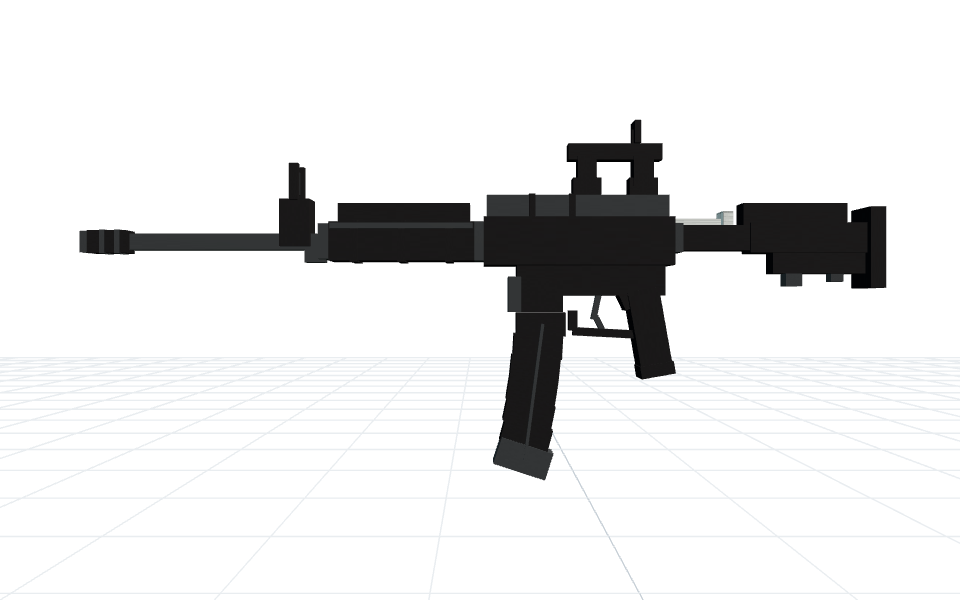
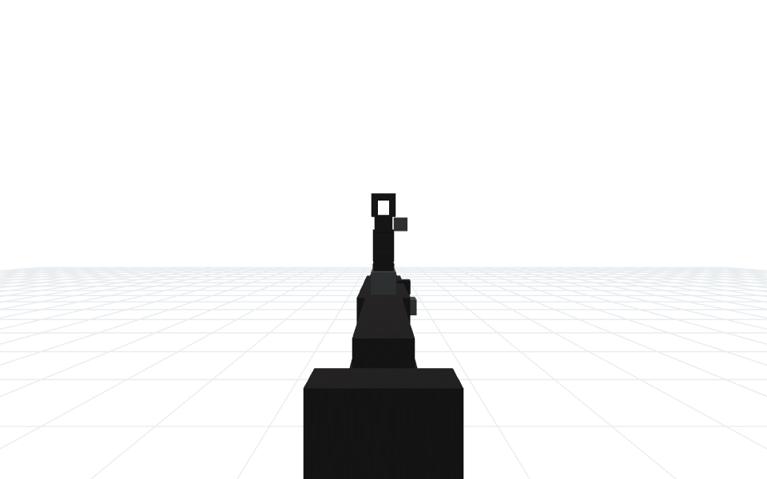
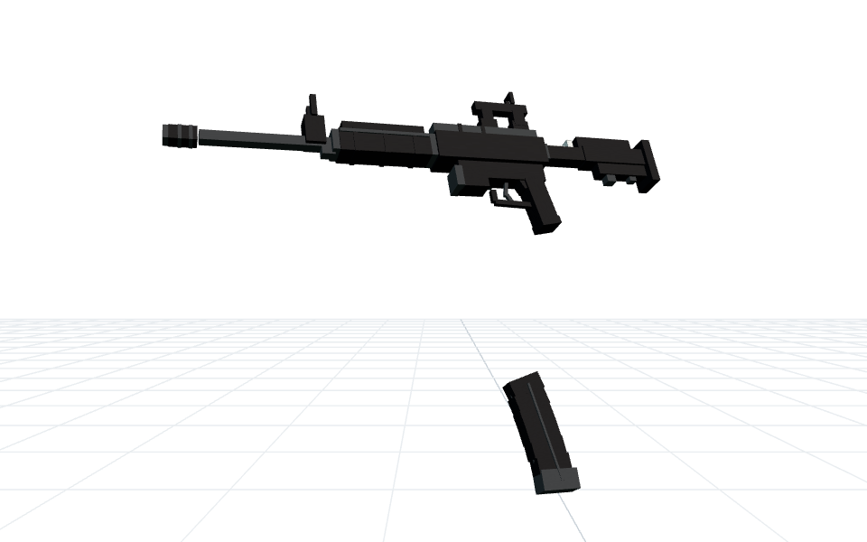
72 部件 · 弹匣 10 · 枪机 3
构建链重放通过 · root 原文保留
5 次 DeepSeek 调用 · 134,746 tokens
由 DeepSeek 实际生成，使用当前 AK47 的狐狸骨骼、姿态、换弹与命令后端。
画面来自导出命令的沙盒运行。每个案例的源码、mccmd、安装顺序和验证记录均已保存。机器可读验证记录



72 部件 · 弹匣 10 · 枪机 3
构建链重放通过 · root 原文保留
5 次 DeepSeek 调用 · 134,746 tokens
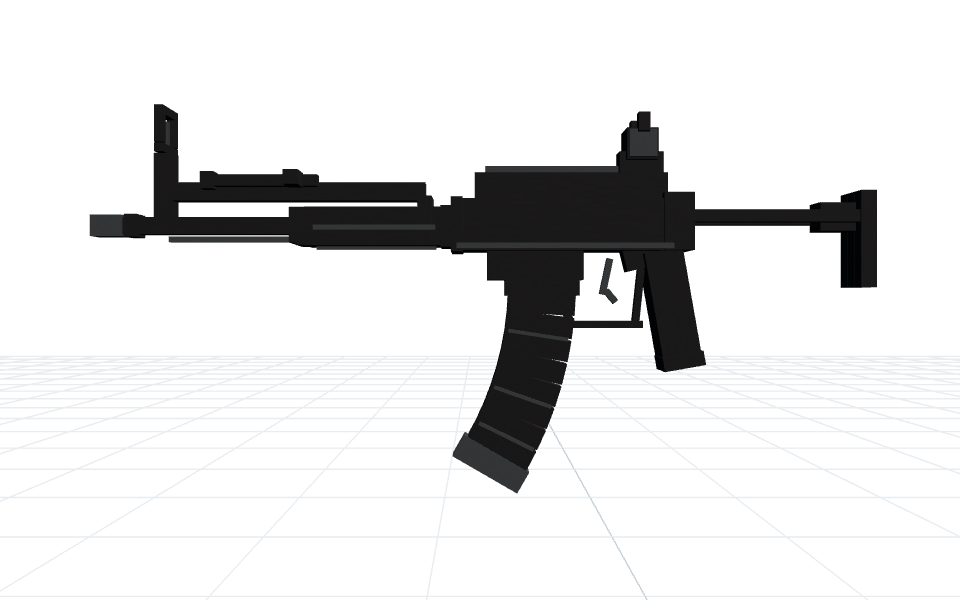
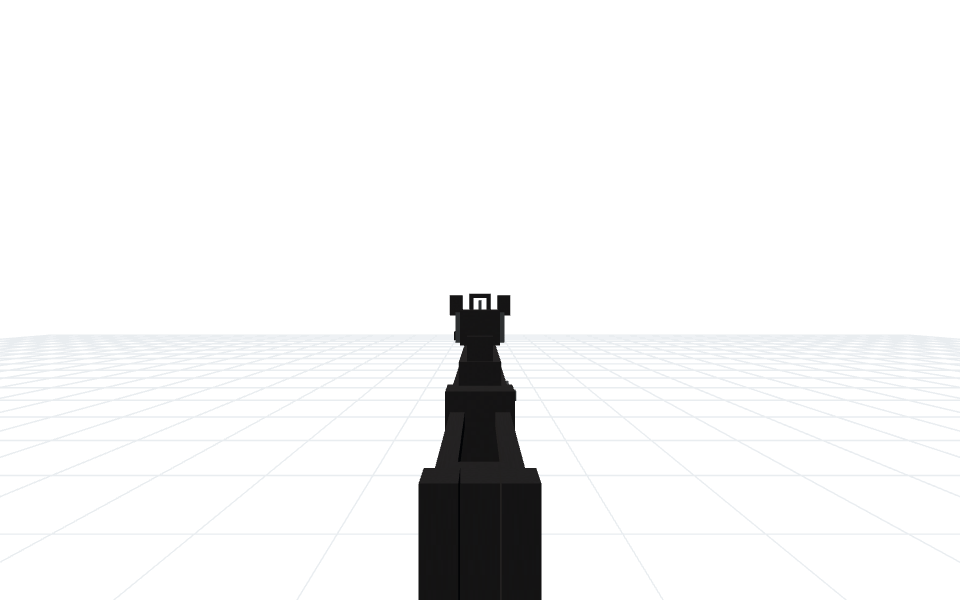
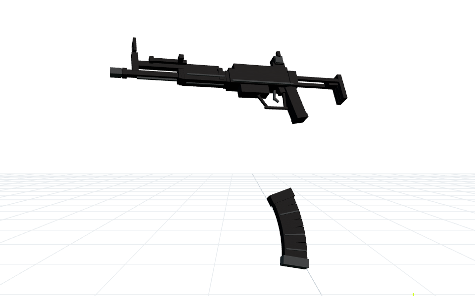
73 部件 · 弹匣 17 · 枪机 3
构建链重放通过 · root 原文保留
5 次 DeepSeek 调用 · 106,000 tokens
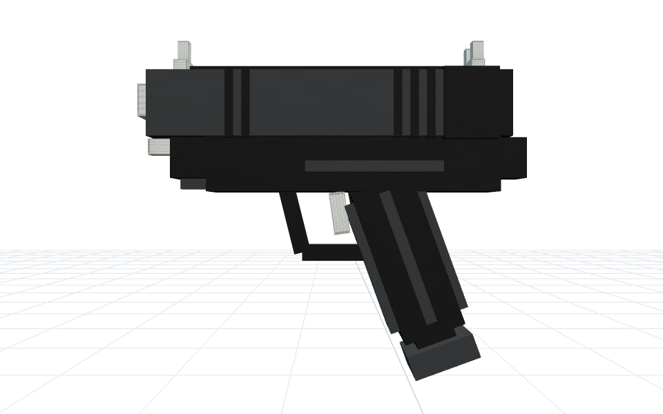
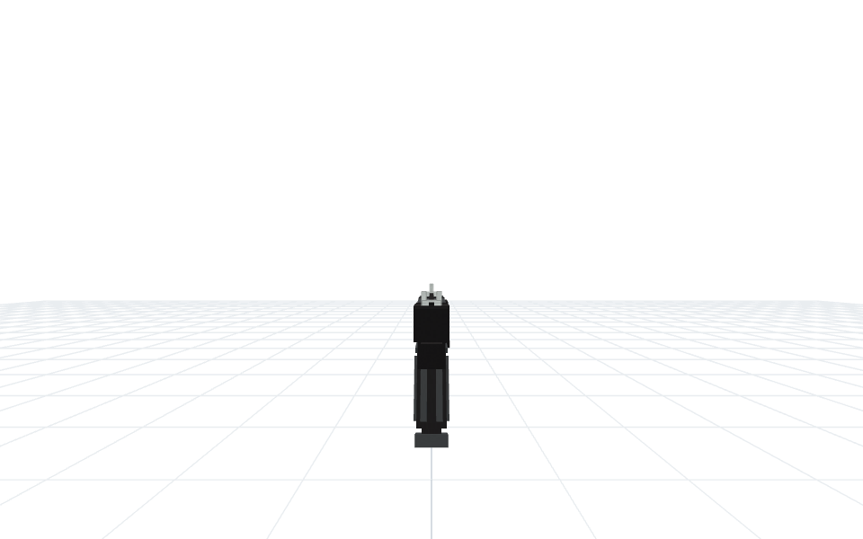
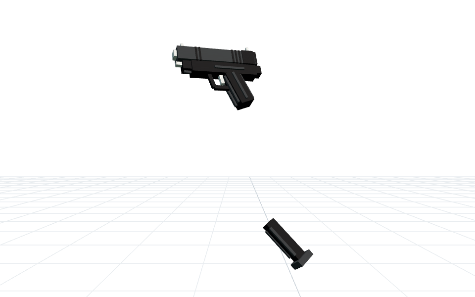
44 部件 · 弹匣 5 · 枪机 18
构建链重放通过 · root 原文保留
5 次 DeepSeek 调用 · 110,926 tokens
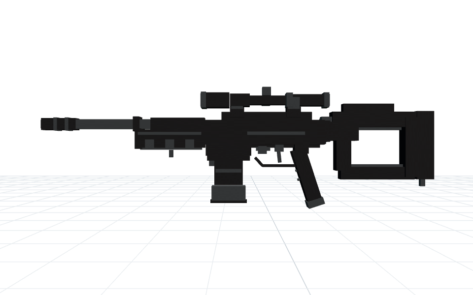
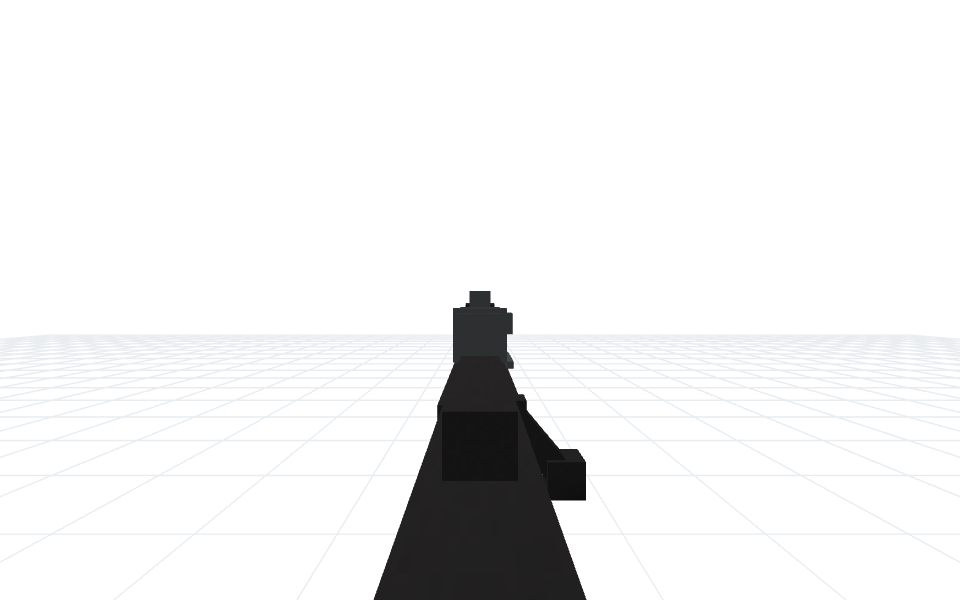
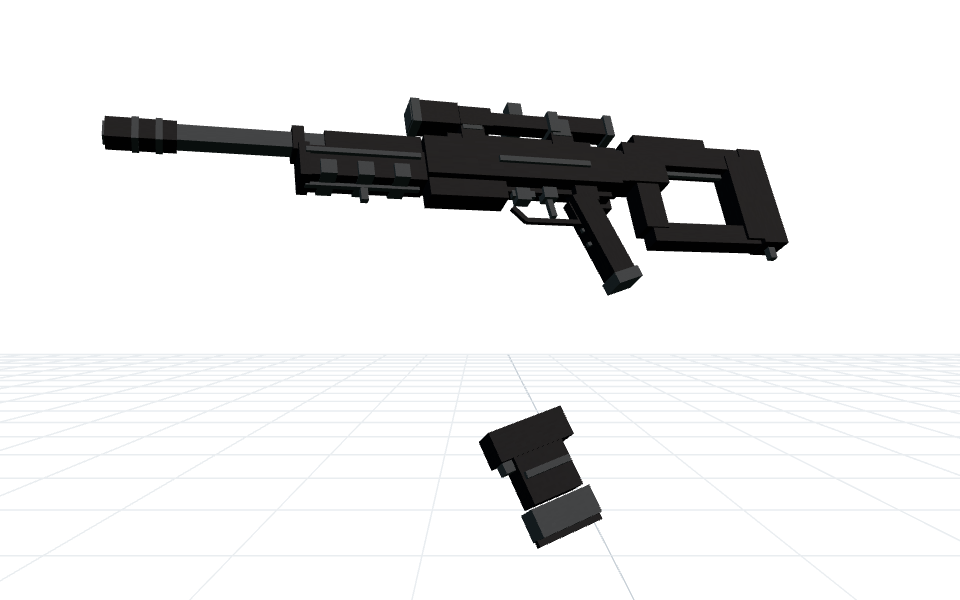
74 部件 · 弹匣 7 · 枪机 4
构建链重放通过 · root 原文保留
5 次 DeepSeek 调用 · 127,862 tokens
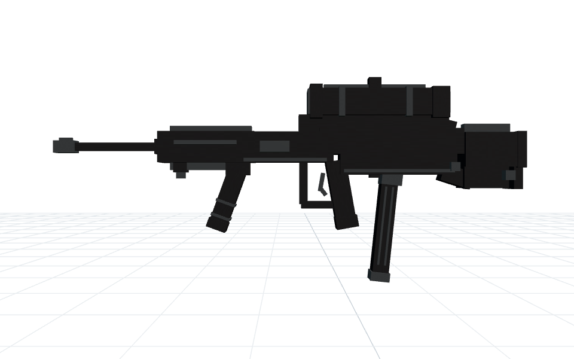
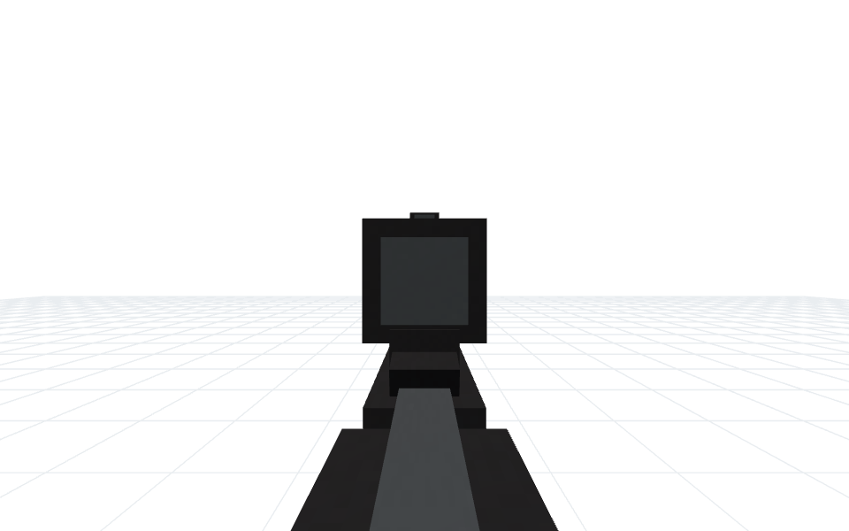
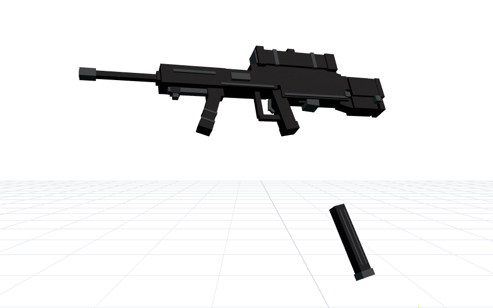
66 部件 · 弹匣 6 · 枪机 2
构建链重放通过 · root 原文保留
6 次 DeepSeek 调用 · 174,246 tokens